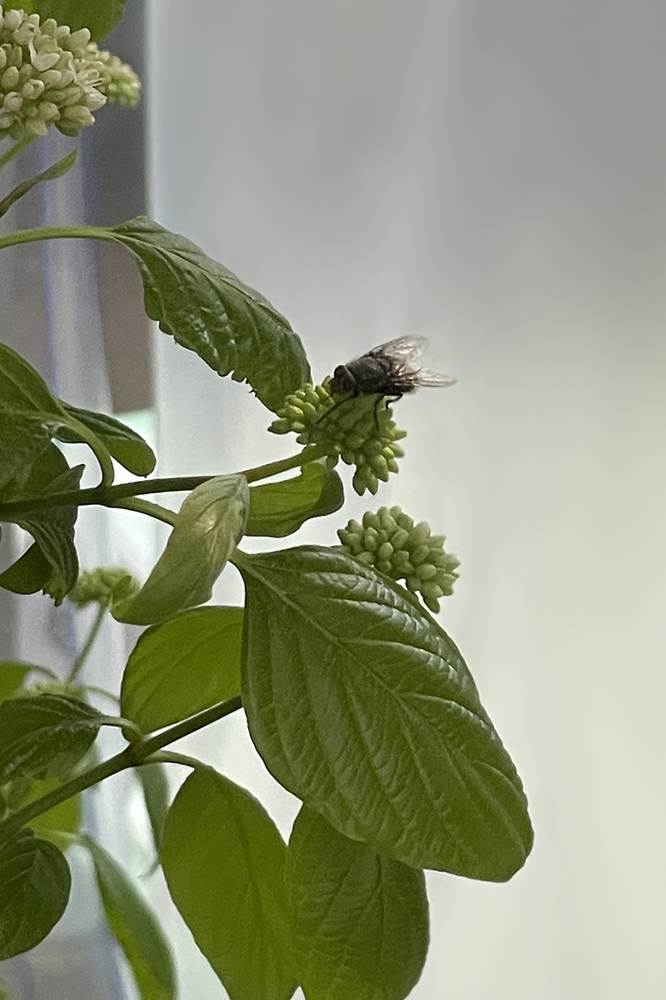
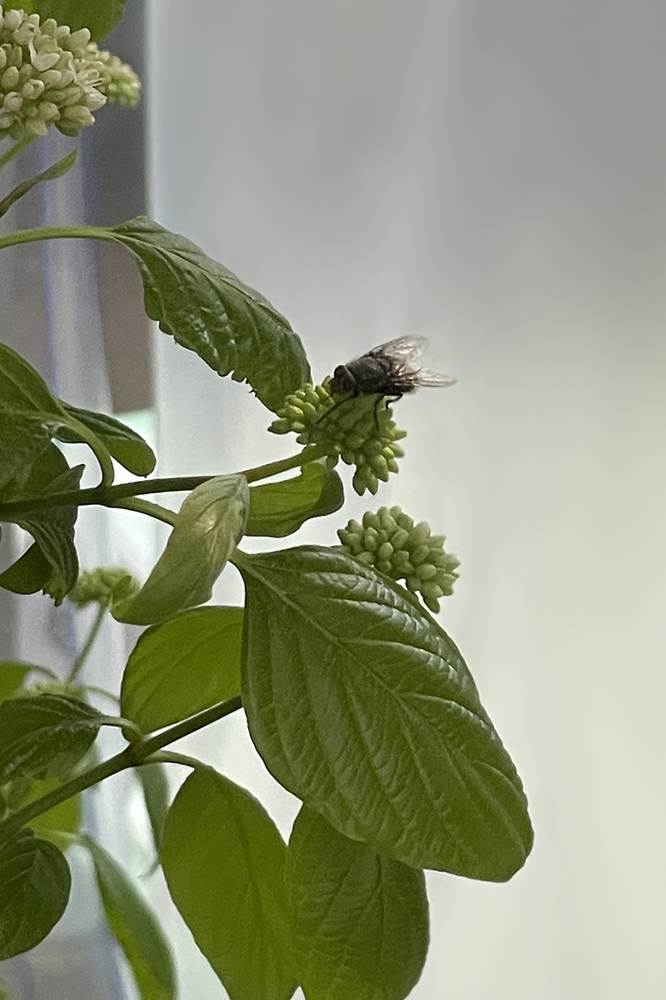

A domestic garden equipped to withstand the harsh Syracuse winter. An effort to recognize the needs and desires of differently knowing and feeling species from ourselves. An investigation into the relationship between architectural technology and vegetal life. A 100 square foot greenhouse, built using an aluminum frame, plastic envelope, and details built from extruded polystyrene foam, high density polyethylene, polyvinyl chloride, and cinder blocks, as well as off-the-shelf plastic and metal components. An enclosed a hydroponic environment that synthetically feeds and aerates a network of fruit-bearing garden plants with about 120 liters of chemical solution saturated with nitrogen, phosphorus, and potassium. A traveling greenhouse and desk. A nomad, who can run off of a generator to produce enclosure, privacy, or ecological difference. A working document.
 
